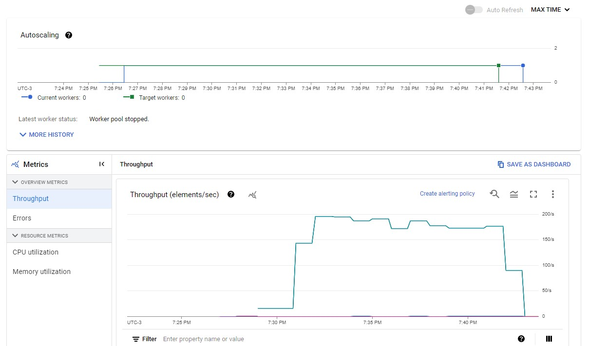

8 observações de uma grande solução de dados na GCP
Em 2022, fui chamado para participar de um projeto cujo os indicadores não estavam bons. Eu precisei atuar em vários papéis, inclusive não-técnico, para entregar a contribuição que o projeto precisava.
Após meses de muito trabalho de várias pessoas competentes, o produto entrou em produção, a empresa obteve 90%+ de economia em custo de infraestrutura tecnológica e obteve feedback positivo de seu principal cliente.
Abaixo, a solução técnica em linguagem livre. Omiti algumas relações e componentes porque não são necessários para esse post. Clique na imagem para expandir.

À seguir, as observações dessa solução.
1. Cloud Run é um serviço excelente para os seus casos de uso previstos#
Cloud Run é um serviço que proporciona produtividade porque a única exigência dele é o endereço do contêiner no qual possui o código-fonte. Para uma aplicação empresarial, claro, é fundamental definir outras importantes configurações.
Após o deploy, o serviço codificado encontra-se exposto por uma URL gerada pela GCP, com HTTPS, com auto-scaling e com load balacing. De fato, impressionante e curioso para um old like me.
Em busca de entender como esse serviço funciona, é possível observar que o YAML gerado pelo deploy possui um apiVersion do Knative. Sendo assim, tornou-se claro que o auto-scaling e load balacing são fornecidos pela parceria Knative e Kubernetes.
É importante atentar aos limites do serviço que pretende utilizar, em especial em uma prova de conceito. Cloud Run, nesse momento, entre seus limites existem máximo de vCPU em 8, máximo de memória em 32 GB e tempo máximo de execução em 1 hora.
O App Runner, que é o serviço similar na AWS, entre os limites existem máximo de vCPU em 2, máximo de memória em 4 GB e tempo máximo de execução não encontrado. Nota-se que é disponível na AWS menos recursos. No entanto, acredito que para a maioria dos casos de usos são recursos suficientes.
Importante notar que a funcionalidade scale-to-zero existe no Cloud Run, mas não existe no App Runner. Há uma issue, nesse momento aberta, para esclarescer isso. Em outras palavras, não é possível fazer um deploy com App Runner informando que pode haver zero instância disponível. É possível no Cloud Run.
A solução apresentada nesse post que escrevo possui 20+ Cloud Run. A maioria pode possuir zero instância disponível porque o tempo de cold start não é um problema para eles. Isso gera uma enorme economia financeira de infraestrutura.
Infelizmente, nesse momento, não é possível obter o mesmo na AWS. De qualquer forma, o custo para manter uma instância disponível todos os dias não deverá ser um problema para a maioria das empresas.
Outra desvantagem do App Runner é que, nesse momento, não é possível hospedar a aplicação no Brasil. Se baixa latência é um requisito não-funcional do projeto e os usuários estão no Brasil, atente-se para isso.
Voltando ao Cloud Run, o seu limite de memória e tempo exigiram que fizéssemos mudanças na solução. Isso é descrito no tópico à seguir.
2. Soluções para os limites do Cloud Run#
Infelizmente, não houve tempo para verificar o uso do Dataproc ou Dataflow para a principal funcionalidade da solução – injestão de dados. Por isso, para essa funcionalidade, Cloud Run foi usado.
Ao ter conhecimento sobre o tamanho máximo de um arquivo a ser importado, foi observado que o limite máximo para processamento, definido em 1 hora, não é suficiente.
A solução para contornar esse limite foi alterar um componente para dividir o arquivo em pedaços com tamanho previamente definido e fazer a pipeline processar os pedaços em vez do arquivo principal.
Ao ter conhecimento sobre o tamanho máximo de um arquivo a ser exportado, foi observado que o limite máximo de memória, definido em 32 GB, não é suficiente. Isso foi identificado porque o sistema de arquivo do Cloud Run é na memória. Portanto, gravar nele usa a memória da instância do contêiner.
A solução para contornar esse limite foi usar o serviço Filestore que é um NFS. Cria-se a instância Filestore e associa-se no Cloud Run, conforme esses passos. Com isso, altera-se o código-fonte da exportação para passar a utilizar esse novo disco que pode possuir até 100 terabytes.
Se diminuir custo é uma prioridade e a aplicação pode executar por mais alguns minutos, é possível criar e destruir a instância Filestore em tempo de execução e paga-se somente pelo uso.
3. Pub/Sub é um bom serviço, mas não evidente em falha#
O serviço Pub/Sub foi adotado na solução para criar um controle de repetição e desacoplar componentes. Como para esse último uso não era de fato necessário, mas imposto infelizmente, vou descrever sobre o primeiro uso.
A criação de um controle de repetição foi necessário porque o Cloud Run poderia não processar alguma requisição com sucesso por, principalmente, atingir o máximo de instância configurada em execução.
Esse sistema foi configurado para realizar até X tentativas com uma determinada espera exponencial e, caso o número de tentativas for atingido, enviar para uma DLQ para tratamento manual.
A criação de um controle de fluxo, nesse momento, foi implementado por uma solução in house. No entanto, pode-se adotar o Pub/Sub, conforme link acima.
Independente do serviço ou solução adotada(o), é fundamental ter esses dois controles se o requisito não-funcional informa pico de requisições e o auto-scaling da infraestrutura não poderá atender, por qualquer motivo (economia de custo com infraestrutura, limitação de conexões ou gerencimento de conexões com banco de dados, limitação de rede, entre outros).
Além disso, também é importante realizar testes de performance em ambiente não-produtivo para simular os cenários de produção e calibrar as configurações desses controles.
Havia uma versão da solução que usada o Pub/Sub em um ponto que gerava falha em um cenário específico. O Pub/Sub não informa se enviou a mensagem e o Cloud Run, remetente, não informa que recebeu. A mensagem simplesmente se perdia.
Infelizmente, a solução foi substituir o Pub/Sub nesse ponto por uma chamada http com repetição codificada. Caso atinja o limite de repetição, envia-se para uma DLQ para tratamento manual.
4. BigQuery é um excelente serviço se baixa latência para consulta não é requisito#
O BigQuery foi adotado na solução porque
- os casos de uso de processamento são OLAP,
- quantidade estimada de dados armazenados é alta,
- o tempo para inserção de dados é satisfatória,
- não existirão centenas de consultas em segundos que exigem resposta em milissegundos,
- custo baixo para armazenamento e
- o tempo de consulta em alto volume de dados é assustadoramente eficiente.
Sobre esse serviço, ocorreram dois problemas: Exceder o máximo de DML em fila e obter tempo inesperado em UPDATE.
O primeiro problema foi resolvido diminuindo o máximo de instâncias em paralelo dos Cloud Run que utilizam BigQuery.
O segundo problema foi resolvido alterando o conjunto de UPDATEs por uma única instrução UPDATE [FROM] e UNION ALL.
Por se tratar de um projeto de dados e uso de colunas aninhadas e repetidas, a escrita de SQL foi intensiva. Clásulas e funções tais como WITH, ARRAY_AGG, STRUCT, UNNEST, SELECT AS STRUCT, UPDATE [FROM], EXPORT DATA, e resolver cenários complexos por meio de SQL para deixar a carga de trabalho para o BigQuery fez parte da rotina de trabalho.
Para diminuir ao máximo a carga de trabalho em consultas, as tabelas possuem partições e clusters.
A utilização do BigQuery, que passou a substiuir o sobrecarregado, e por isso caro, Postgres em uma versão antiga da solução, também foi causa da enorme economia de custo em infraestrutura.
5. Workflow é simples e entrega o que é necessário#
Foi necessário utilizar o serviço Workflow porque o Dataflow precisava realizar duas execuções em sequência.
Para isso, o Workflow foi configurado para chamar o Dataflow duas vezes em sequência repassando o conteúdo das variáveis definido no Scheduler.
A configuração foi realizada com a sintaxe via YAML e não tive grandes dificuldades.
6. Dataflow é bom, mas possui duas personalidades#
Após ler a documentação do Dataflow e Apache Beam, entendi que o Dataflow é o carro e o Beam o motor. Sendo assim, se funcionou na minha máquina, o mesmo código funcionará no Dataflow. Infelizmente, não foi assim.
Foram necessárias várias mudanças no código para que o mesmo passasse a executar via Dataflow. Após isso, os problemas não haviam terminado.
A pipeline codificada era parametrizada e para os valores serem reconhecidos em tempo de execução foi necessário alterar do modelo clássico para o modelo flexível.
A curva de aprendizado parecia inofensiva, mas foi longe disso. Mas, no final, o esforço foi compensado.
Os recursos de auto-scaling horizontal e vertical são interessantes e devem ser configurados após simular cenários reais de produção em ambiente não-produtivo.
A imagem abaixo contém algumas métricas de um job do Dataflow usado para migrar dados do BigQuery para Datastore. Nele, é possível observar o uso de 1 worker e throughput próximo de 200 registros por segundo. Mais abaixo, é possível saber CPU e memória utilizados.


7. Datastore foi o serviço utilizado para baixa latência em consulta#
O uso do Scheduler, Workflow e Dataflow foi para copiar dados do BigQuery para Datastore no formato adequado para as consultas que exigem respostas em milissegundos em alto volume de requisições.
Desde que os dados para serem armazenados no Datastore estejam no formato esperado e o(s) index(es) previamente estudado(s) e criado(s), bastou armazená-los e encontravam-se prontos para consulta.
Foi utilizada uma chave única para cada entidade inserida no Datastore. Sendo assim, por meio da API do Apache Beam para Datastore, foi possível utilizar upsert.
Foi necessário desabilitar o flag throttle_rampup para que a escrita de dados no Datastore por meio da API do Apache Beam fosse satisfatória dada a volumetria de produção e tempo esperado para execução da pipeline.
O Datastore foi escolhido, ao invés do Firestore, porque o throughput de gravação do Datastore é maior se adequando mais ao caso de uso do projeto.
8. K6 é uma boa ferramenta, mas não implementa um caso de uso#
O K6 foi utilizado para realizar testes de performance na solução. O uso foi bom e o resultado foi obtido conforme o esperado.
Para facilitar a visualização dos resultados foi adotado o K6 reporter.
O recurso não encontrado no K6 foi determinar uma janela para execução do cenário. Por exemplo: Execute 3000 requisições com 100 usuários em 1 minuto.
“Em 1 minuto” foi uma configuração não encontrada na ferramenta. Com isso, precisamos calibrar o número de requisições e usuários para caber o tempo necessário.
Conclusão#
Ter uma solução com serviços operados em serverless e cobrança pay-as-you-go (pague apenas o que usar) torna a solução menos complexa e mais barata de criar e operar.
É um avanço, eu entendo, tal como Python, JavaScript e GO é para Java e C#, por entregarem as mesmas funcionalidades sendo mais simples e, por consequência, mais produtivas.
Nota#
A imagem da solução apresentada nesse post possui o serviço Firewall da AWS, mas eu não tenho certeza se a empresa utiliza esse serviço, embora utilize Firewall e o serviço de DNS da AWS.